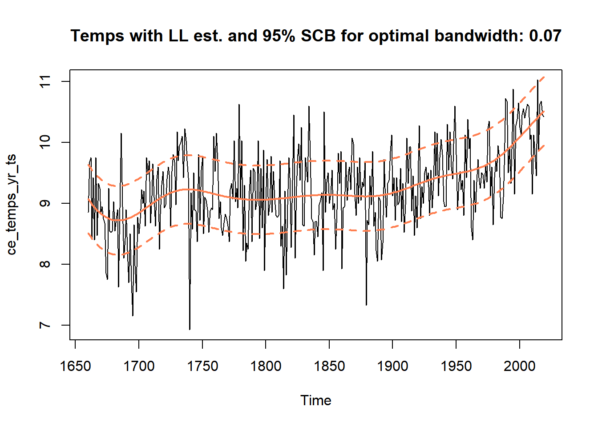
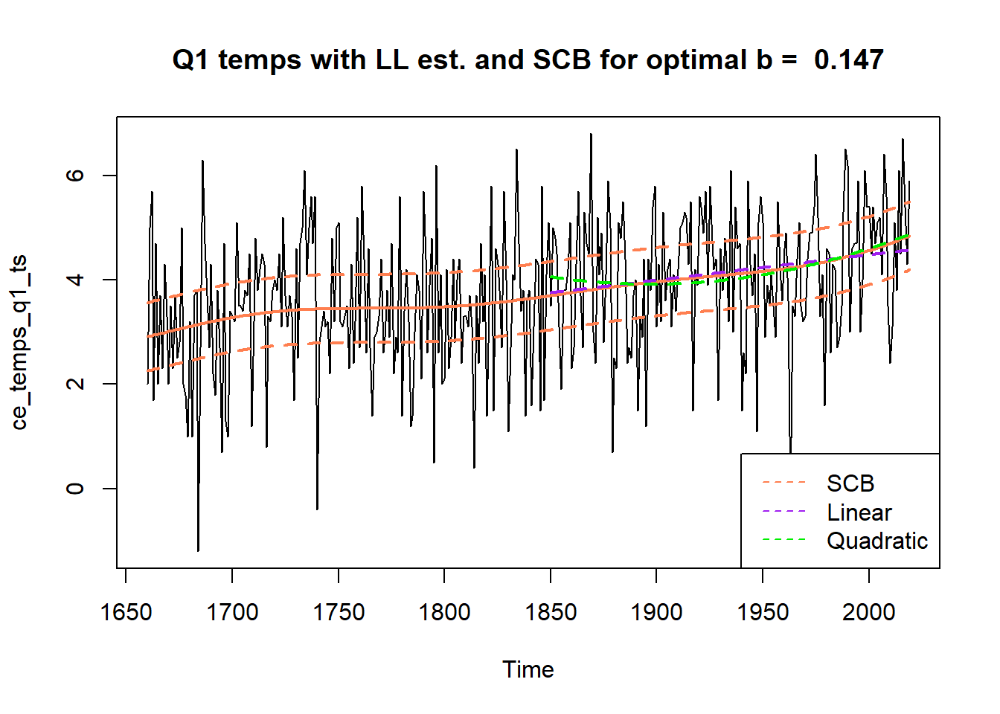
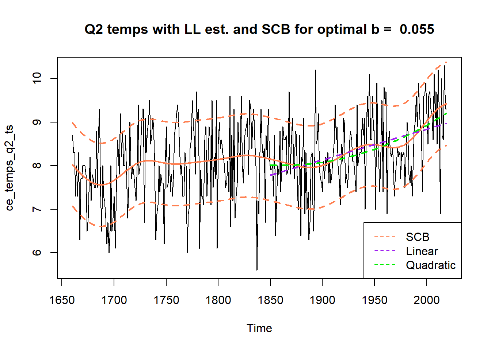
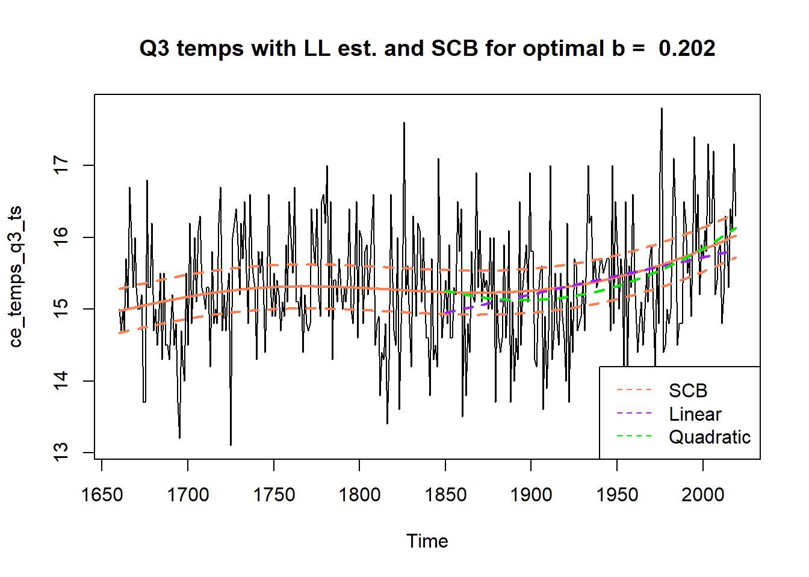
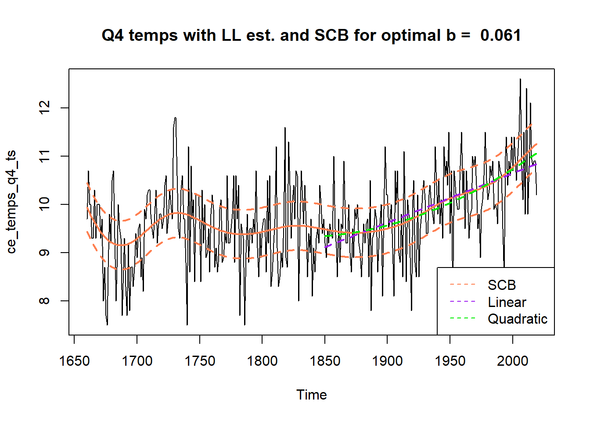
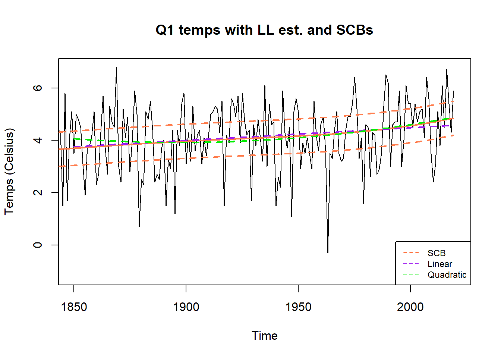

SCB Analysis on Global Temps Data
Sun, Adam
February 22, 2020
Last updated: 2020-04-16
Checks: 7 0
Knit directory: SCBs_Exploration/
This reproducible R Markdown analysis was created with workflowr (version 1.4.0). The Checks tab describes the reproducibility checks that were applied when the results were created. The Past versions tab lists the development history.
Great! Since the R Markdown file has been committed to the Git repository, you know the exact version of the code that produced these results.
Great job! The global environment was empty. Objects defined in the global environment can affect the analysis in your R Markdown file in unknown ways. For reproduciblity it’s best to always run the code in an empty environment.
The command set.seed(20200222) was run prior to running the code in the R Markdown file. Setting a seed ensures that any results that rely on randomness, e.g. subsampling or permutations, are reproducible.
Great job! Recording the operating system, R version, and package versions is critical for reproducibility.
Nice! There were no cached chunks for this analysis, so you can be confident that you successfully produced the results during this run.
Great job! Using relative paths to the files within your workflowr project makes it easier to run your code on other machines.
Great! You are using Git for version control. Tracking code development and connecting the code version to the results is critical for reproducibility. The version displayed above was the version of the Git repository at the time these results were generated.
Note that you need to be careful to ensure that all relevant files for the analysis have been committed to Git prior to generating the results (you can use wflow_publish or wflow_git_commit). workflowr only checks the R Markdown file, but you know if there are other scripts or data files that it depends on. Below is the status of the Git repository when the results were generated:
Ignored files:
Ignored: .Rhistory
Ignored: analysis/.Rhistory
Unstaged changes:
Modified: analysis/scbs_analysis_simulations.Rmd
Note that any generated files, e.g. HTML, png, CSS, etc., are not included in this status report because it is ok for generated content to have uncommitted changes.
These are the previous versions of the R Markdown and HTML files. If you’ve configured a remote Git repository (see ?wflow_git_remote), click on the hyperlinks in the table below to view them.
| File | Version | Author | Date | Message |
|---|---|---|---|---|
| Rmd | fcf1821 | Adam Sun | 2020-04-16 | Data analysis results with SCBs |
| html | 4f76cd6 | Adam Sun | 2020-04-16 | Build site. |
| Rmd | e798978 | Adam Sun | 2020-04-16 | Data analysis results with SCBs |
| html | f6ed4fb | Adam Sun | 2020-04-16 | Build site. |
| Rmd | d330342 | Adam Sun | 2020-04-16 | Data analysis results with SCBs |
| html | 8ca086f | Adam Sun | 2020-04-16 | Build site. |
| Rmd | 2b32ca9 | Adam Sun | 2020-04-16 | Data analysis results with SCBs |
| html | 0602a88 | Adam Sun | 2020-04-16 | Build site. |
| Rmd | 58408e8 | Adam Sun | 2020-04-16 | Data analysis results with SCBs |
| html | aaf31b1 | Adam Sun | 2020-04-16 | Build site. |
| Rmd | db717be | Adam Sun | 2020-04-16 | Data analysis results with SCBs |
| html | e837f06 | Adam Sun | 2020-03-06 | Build site. |
| Rmd | e7d4e33 | Adam Sun | 2020-03-06 | initial analysis SCBs file |
| html | f748651 | Adam Sun | 2020-03-06 | Build site. |
| Rmd | 378da5e | Adam Sun | 2020-03-06 | initial analysis SCBs file |
| html | 6c38059 | Adam Sun | 2020-03-06 | Build site. |
| Rmd | 0d6644f | Adam Sun | 2020-03-06 | initial file for SCBs analysis |
| html | 708785b | Adam Sun | 2020-03-05 | Build site. |
| html | 255e23e | Adam Sun | 2020-03-05 | Build site. |
| Rmd | 5053802 | Adam Sun | 2020-03-05 | wflow_publish(files = “weather_data_analysis.Rmd”) |
| html | cc3ac7c | Adam Sun | 2020-03-05 | Build site. |
| Rmd | f370a3e | Adam Sun | 2020-03-05 | initial analysis file |
| html | dc05739 | Adam Sun | 2020-02-22 | Build site. |
| Rmd | 149c433 | Adam Sun | 2020-02-22 | initial analysis file with updates to come |
SCB Prep Functions
Data Analysis - Yearly Means
Data prep
Notes: - We consider finding the 95% Simultaneous Convidence Bands for annual mean temps, i.e. 1660 to 2019 has 360 data points.

Estimating \(\hat\sigma\) with Eq (25)
Note/Q’s:
- Estimate the long-term \(\hat\sigma\) with the residuals of \(X_i - \mu_k(i)\), where \(\mu_i\) is based on local linear estimate approach with bandwidth \(b \in (\frac{1}{3}, \frac{1}{2})\), as per step (a) of 4.1: Implementation.
- We use the locpoly function in R which estimates local polynomial fitting with Normal kernel weights.
- Applying Thm 3, we use \(k_n\) = 360^(1/3) to estimate \(\hat\sigma_1\), \(\hat\sigma_2\), and \(\hat\sigma_3\).
- We round \(k_n\) = 360^(1/3) to the closest whole number = 7.
- The estiamted long-term SDs are 0.78, 0.569, and 0.772 respectively. Note how \(\hat\sigma_1\) and \(\hat\sigma_3\) are closer to each other than to \(\hat\sigma_2\).
- Is the series long enough to measure the long-term variance?
- We choose \(\hat\sigma_3\) to adjust for our optimal bandwidth and 95% CI interval \(\hat q_{95}\) because it has best asymptotic convergence as per Thm 3. However, it is somewhat more susceptible to jumps in \(\mu\), which do exist in our yearly temperature series (e.g. from 1739 to 1730 where yearly temps dropped from 9.425 to 9.425 degrees Celsius).
- Perhaps we can test later using \(\hat\sigma_2\) which is more robust to jumps in \(\mu\) because it calculates \(\hat\sigma\) based on the median absolute difference of the intervals.
Calculate optimal bandwidth (Rupeprt 1995) for our mean temperature series \(\mu_t\)
Notes/Q’s:
- Use function dpill() to automatically select the bandwidth proposed by Ruppert (1995) for minimizing MSE.
- Maybe also try range of bandwidths higher/lower than Ruppert ideal bandwidth for exploration.
- Get variance correction factor (\(\hat\rho\)) for each bandwidth based on step (a) of 4.1: Implementation.
- \(\hat\nu\) based on the sample variance of the errors (observed - fitted local linear estimate based on bandwidth)
- Final bandwidth based on \(2\hat\rho^{1/5}b_{rup}\),
- We also try trying \(b_{rup}\) +/- 0.025 (which means length of 9).
Final “optimal” bandwidths to try based on adjustments to Ruppert optimal bandwidth:
0.07, 0.045, 0.095
Bootstrapping to estimate the 95th percentile \(\hat q_{95}\)
Notes/Q’s:
- For each bandwidth above, we use 10^4 repetitions to bootstrap the 95% confidence interval \(\hat\ q_{95}\)
- From here, we get an estimate of the SCB bandwidth for each \(\hat b\) as \(\hat\sigma \hat{q}_{0.95}(b)\).
- Should we round bandwidth lengths to integer? Easier to interpret, but the locpoly function allows non-integer bandwidths.
set.seed(9980)
years = time(ce_temps_yr_ts)
num_sims = 10000
rnorm_sims = matrix(rnorm(num_sims*length(ce_temps_yr_ts), 0 ,1),
nrow = num_sims, ncol = length(ce_temps_yr_ts))
sup_mus_boot_0 = apply(rnorm_sims, MARGIN = 1, FUN = calc_suprem_rnorm, time_idx = years, k_final = k_final_0)
sup_mus_boot_lo = apply(rnorm_sims, MARGIN = 1, FUN = calc_suprem_rnorm, time_idx = years, k_final = k_final_lo)
sup_mus_boot_hi = apply(rnorm_sims, MARGIN = 1, FUN = calc_suprem_rnorm, time_idx = years, k_final = k_final_hi)
q_95_0 = calc_q95(sup_mus_boot_0)
q_95_lo = calc_q95(sup_mus_boot_lo)
q_95_hi = calc_q95(sup_mus_boot_hi)
SCBs_k_0 = calc_SCBs(years, ce_temps_yr_ts, sup_mus_boot_0, q_95_0,sigmas$hat_3, k_final_0)
SCBs_k_lo = calc_SCBs(years, ce_temps_yr_ts, sup_mus_boot_lo, q_95_lo, sigmas$hat_3, k_final_lo)
SCBs_k_hi = calc_SCBs(years, ce_temps_yr_ts, sup_mus_boot_hi, q_95_hi, sigmas$hat_3, k_final_hi)Out of curiosity, we also look at how much of our true temperature series is covered by the SCBs.
This is not grounded in theory, but perhaps it gives a sense of how strongly our temperature series fluctuates year over year.
Coverage of actual data with 95% SCB for bandwidth length = 25 – 0.667
Coverage of actual data with 95% SCB for bandwidth length = 16 – 0.783
Coverage of actual data with 95% SCB for bandwidth length = 34 – 0.583
Plots with SCBs
Notes/Q’s:
- For each bandwidth tried, we plot time series, local linear estimates, and their SCBs.


Fitting curves through the 95% SCBs
With our SCBs, we can now attempt to fit different models through the temperature series. If they fall within the bounds of 95% SCB, then this suggests these trends are probable models to predict the true trend of yearly temperatures.
For the temperature data since 1850, we fit a linear model (purple) and a quadratic model (green) and observe both lines falling within the bounds of the SCBs, indicating they are possible candidates to model the temperature series.
Perhaps more interestingly, that using our 95% SCBs, we can conclude that yearly temperatures have not been constant since 1850. Since the upper limit of the 95% SCB in 1850, 9.7, is smaller than the lower limit of the 95% SCB in 2019,9.945, there does not exist a horizontal line which can be drawn from 1850 to 2019 that which would be covered by the SCBs.
ce_temps_post_1850 = ce_temps_yr_ts[time(ce_temps_yr_ts) >= 1850] %>% ts(start = 1850)
mdl_lin = lm(ce_temps_post_1850 ~ time(ce_temps_post_1850))
mdl_quad = lm(ce_temps_post_1850 ~ I(time(ce_temps_post_1850)^2) + time(ce_temps_post_1850))
plot(ce_temps_yr_ts, main = paste("Temps with LL est, 95% SCB, and other things"), col = alpha("black", 0.5))
lines(as.numeric(years), SCBs_k_0$loclin_fit, lwd = 2, lty = 1, col = "coral")
lines(x = as.numeric(years), y = SCBs_k_0$series_UB, lwd = 2, lty = 2, col = "coral")
lines(x = as.numeric(years), y = SCBs_k_0$series_LB, lwd = 2, lty = 2, col = "coral")
lines(as.numeric(time(ce_temps_post_1850)), predict(object = mdl_lin), lwd = 2, lty = 2, col = "purple")
lines(as.numeric(time(ce_temps_post_1850)), predict(object = mdl_quad), lwd = 2, lty = 2, col = "green2")
legend("bottomright", legend = c("SCB", "Linear", "Quadratic"),
col = c("coral", "purple", "green2"), lty = c(2,2,2))
| Version | Author | Date |
|---|---|---|
| aaf31b1 | Adam Sun | 2020-04-16 |
Data Analysis - Quarterly
We also produce the 95% SCBs for the temperatures for each season (denoted as quarters) and see if similar conclusions about trends in the yearly temperature series can be drawn here.
Estimate \(\hat\sigma\) with Eq (25)
Note/Q’s:
- Estimate the long-term \(\hat\sigma\) with the residuals of \(X_i - \mu_k(i)\) as per step (a) of 4.1: Implementation.
- We use the locpoly function in R which estimates local polynomial fitting with Normal kernel weights.
- Again, we use \(k_n\) = 360^(1/3) to estimate \(\hat\sigma_3\) = the long-term SD \(\hat\sigma\).
Results:
- Not surprisingly, different quarters have varying different long-term \(\hat\sigma\)s. - The winter season (Quarter 1) has the highest SD at 1.305. followed by spring, summer, and lastly autumn at 0.646.
- All else equal, this suggests wider bands for winter and narrower bands for autumn.
Calculate bandwidth for temperature series by quarter
We notice a large discrepancy in the optimal bandwidth lengths for each the temperature series by quarter.
The optimal bandwidth for spring (Qtr2) is 0.055 (Ruppert’s automatic bandwidth selector = 0.023), while the optimal bandwidth for summer (Qtr3) is 0.202 (Ruppert bandwidth = 0.104). TO RESEARCH – WHY IS THIS THE CASE?
The optimal bandwidth for summer (Qtr3) is larger than 0.2, which we have shown in the simulation study to lower the nominal coverage due to higher bandwidths leading to higher bias.
As such, we will be careful with analyzing the Qtr3 temperature series.
Bootstrap SCBs and plot
We plot the quarterly temperature series along with their respective SCBs below.
We observe from the plots below that the local linear estiamtes and correponding 95% SCBs for the temperatures series broken out by quarter are not similar. This again is likely due to the large range of bandwidths (0.05 to 0.20) selected earlier.
Like with the yearly temperature series, we fit linear and quadratic models on all four seasonal yearly temperatures since 1850.
No linear nor quadratic model falls outside the range of the 95% SCB, for any quarterly temperature series. This suggests neither models are invlidated based on 95% SCB coverage alone. However, a quadratic model seems less plausible, especially for the Qtr1 temperature series since the fitted model actually show this convex curve sloping down to attain its minimum in 1897 before curving back up.
A linear model seems more reasonable for all 4 quarter temperature series, and their positive slopes across all quarters further support the fact that global temperatures have been rising since 1850.

Playground/Additional Notes
- Thoughts with fake data. Test structural breaks etc, like suppose we added 2 degrees Celsius to all temps after 1990, etc.

sessionInfo()R version 3.5.1 (2018-07-02)
Platform: x86_64-w64-mingw32/x64 (64-bit)
Running under: Windows 10 x64 (build 18362)
Matrix products: default
locale:
[1] LC_COLLATE=English_United States.1252
[2] LC_CTYPE=English_United States.1252
[3] LC_MONETARY=English_United States.1252
[4] LC_NUMERIC=C
[5] LC_TIME=English_United States.1252
attached base packages:
[1] stats graphics grDevices utils datasets methods base
other attached packages:
[1] KernSmooth_2.23-16 forecast_8.9 fracdiff_1.4-2
[4] tseries_0.10-47 scales_1.0.0 forcats_0.3.0
[7] stringr_1.4.0 dplyr_0.8.0.1 purrr_0.3.2
[10] readr_1.1.1 tidyr_0.8.1 tibble_2.1.3
[13] ggplot2_3.2.1 tidyverse_1.2.1 astsa_1.9
loaded via a namespace (and not attached):
[1] zoo_1.8-5 tidyselect_0.2.5 urca_1.3-0
[4] haven_1.1.2 lattice_0.20-35 colorspace_1.4-1
[7] htmltools_0.3.6 yaml_2.2.0 rlang_0.4.0
[10] pillar_1.4.2 glue_1.3.1 withr_2.1.2
[13] TTR_0.23-5 modelr_0.1.2 readxl_1.1.0
[16] quantmod_0.4-15 timeDate_3043.102 munsell_0.5.0
[19] gtable_0.3.0 workflowr_1.4.0 cellranger_1.1.0
[22] rvest_0.3.2 evaluate_0.11 knitr_1.20
[25] lmtest_0.9-37 parallel_3.5.1 curl_3.2
[28] broom_0.5.0 xts_0.11-2 Rcpp_1.0.2
[31] backports_1.1.5 jsonlite_1.5 fs_1.2.6
[34] hms_0.4.2 digest_0.6.21 stringi_1.4.3
[37] grid_3.5.1 rprojroot_1.3-2 quadprog_1.5-8
[40] cli_1.1.0 tools_3.5.1 magrittr_1.5
[43] lazyeval_0.2.2 crayon_1.3.4 whisker_0.3-2
[46] pkgconfig_2.0.3 xml2_1.2.0 lubridate_1.7.4
[49] assertthat_0.2.1 rmarkdown_1.10 httr_1.3.1
[52] rstudioapi_0.8 R6_2.4.0 nnet_7.3-12
[55] nlme_3.1-137 git2r_0.25.2 compiler_3.5.1